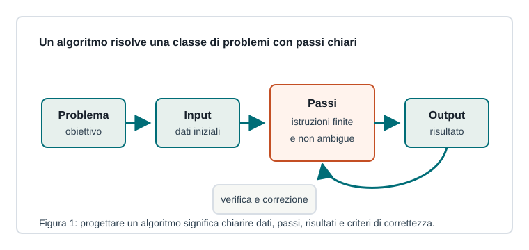

Capitoletto 1.1
Fondamenti degli algoritmi
Un algoritmo è il modo ordinato con cui trasformiamo un problema in una procedura eseguibile, controllabile e poi traducibile in programma.

Problemi e algoritmi
In informatica un problema descrive un obiettivo da raggiungere partendo da dati, condizioni e vincoli. Un algoritmo è una sequenza finita, ordinata e non ambigua di istruzioni che risolve quel problema per tutti i casi previsti.
Un algoritmo non è ancora necessariamente un programma: può essere scritto in linguaggio naturale, in pseudocodice o con un diagramma. Diventa programma quando viene tradotto in un linguaggio eseguibile dal computer.
Proprietà di un buon algoritmo
| Proprietà | Significato | Esempio |
|---|---|---|
| Finitezza | Deve terminare dopo un numero limitato di passi. | Non può ripetere per sempre la stessa istruzione. |
| Non ambiguità | Ogni passo deve essere interpretabile in un solo modo. | “Somma i due numeri” è chiaro; “sistema i dati” è vago. |
| Eseguibilità | Ogni istruzione deve poter essere svolta dall'esecutore. | Un computer può confrontare numeri, ma non intuire intenzioni. |
| Generalità | Deve risolvere una classe di casi, non un solo esempio. | Calcolare l'area di qualunque rettangolo, non solo 3 per 4. |
Input, elaborazione e output
L'input è l'insieme dei dati forniti all'algoritmo. L'elaborazione è la sequenza di operazioni che trasforma quei dati. L'output è il risultato prodotto.
Problema: calcolare l'area di un rettangolo. Input: base e altezza. Elaborazione: base * altezza. Output: area.
Variabili, costanti e tipi
Una variabile è uno spazio di memoria identificato da un nome, il cui valore può cambiare durante l'esecuzione. Una costante ha invece un valore che non deve cambiare.
Il tipo stabilisce quali valori sono ammessi e quali operazioni hanno senso: numeri interi, numeri reali, stringhe, valori booleani e altri tipi più complessi.
| Tipo | Valori | Operazioni tipiche |
|---|---|---|
| Intero | 0, 1, -7, 125 | somma, sottrazione, confronto |
| Reale | 3.14, -0.5 | calcoli con decimali |
| Stringa | "Mario", "classe 3A" | concatenazione, lunghezza |
| Booleano | vero, falso | AND, OR, NOT |
Operatori ed espressioni
Gli operatori combinano valori e variabili per produrre nuovi valori. Gli operatori aritmetici eseguono calcoli, quelli relazionali confrontano valori, quelli logici combinano condizioni.
base = 8
altezza = 5
area = base * altezza
rettangolo_grande = area > 30Nell'esempio base * altezza è un'espressione aritmetica; area > 30 è un'espressione relazionale che produce un valore booleano.
Pseudocodice
Lo pseudocodice descrive un algoritmo in modo vicino al linguaggio umano, ma con una struttura abbastanza precisa da poter essere trasformata in programma.
leggi base
leggi altezza
area = base * altezza
scrivi areaScrivere prima lo pseudocodice aiuta a concentrarsi sul ragionamento, prima dei dettagli di sintassi di Python, Java, C++ o altri linguaggi.
Errori frequenti
- Confondere il problema con un singolo esempio numerico.
- Usare istruzioni vaghe, come “calcola bene” o “sistema il dato”.
- Dimenticare quali input servono davvero.
- Non controllare se l'output è coerente con il problema iniziale.
Esercizi guidati
- Descrivi input, elaborazione e output per calcolare la media di tre voti.
- Scrivi lo pseudocodice per convertire una temperatura da gradi Celsius a Fahrenheit.
- Indica almeno due tipi di dati necessari per registrare nome, età e media di uno studente.
- Spiega perché “prepara una verifica” non è un algoritmo sufficientemente preciso.
Domande con risposta semplice
Che differenza c'è tra algoritmo e programma?
L'algoritmo descrive la procedura logica; il programma è la sua traduzione in un linguaggio eseguibile dal computer.
Perché un algoritmo deve essere finito?
Perché deve produrre un risultato e terminare; altrimenti non risolve davvero il problema.
A cosa serve il tipo di una variabile?
Serve a stabilire quali valori può contenere e quali operazioni possono essere applicate.
Perché si usa lo pseudocodice?
Per progettare la soluzione senza essere subito vincolati alla sintassi di un linguaggio di programmazione.
Per ripassare
Prendi un problema semplice, individua input ed output, scrivi i passi in pseudocodice e poi prova con almeno due esempi diversi. Se funziona solo con un esempio, l'algoritmo non è ancora generale.